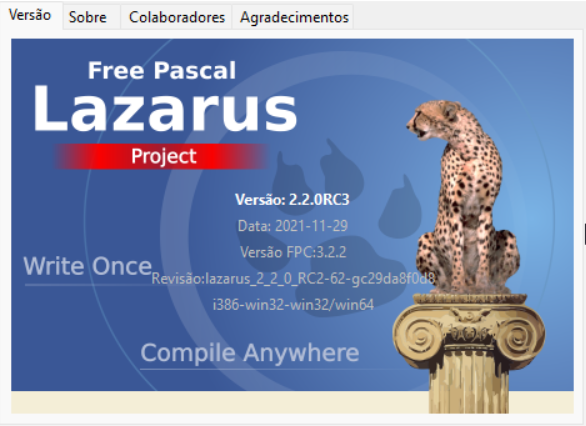
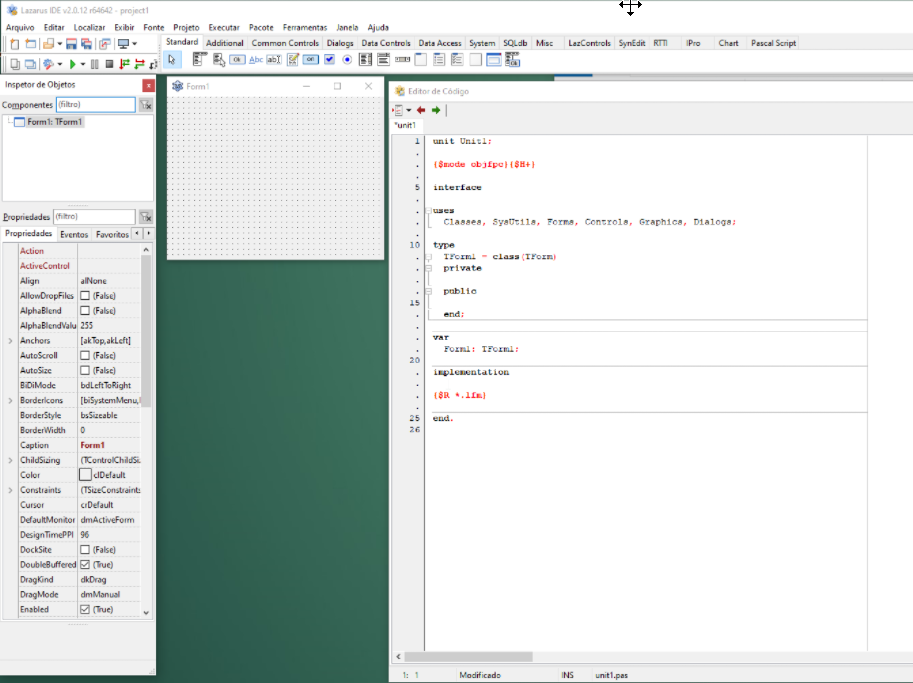

Introdução ao IDE Lazarus
Uma IDE é um ambiente de programação que inclui as ferramentas que agilizam o desenvolvimento de programas de computador. O Lazarus é uma IDE RAD (Rapid Application Developer) especializada em escrever código Pascal e Object Pascal.
Ela se diferencia de outras IDEs por usar métodos eficientes e rápidos em conjunto com a linguagem. Quem usa o Lazarus, enquanto codifica pode ao mesmo tempo lidar com a prototipagem que definirá a UI/UX final, testes e documentação. Em outras IDEs, essas etapas podem ser executadas em tempos diferentes.
No Lazarus, a IDE procura incluir tudo que você precisará do início ao final do projeto de uma maneira ágil. Tudo ali é pensado para ser feito de uma forma limpa e rápida. O Lazarus tem como inspiração o Delphi, provavelmente a IDE mais famosa de desenvolvimento RAD.
Agora que o Lazarus está instalado, a primeira coisa a se fazer é observar a versão que estamos executando. Vá no menu Help | About Lazarus:

Sobre a interface gráfica
As janelas do IDE Lazarus são soltas uma das outras (“vazadas”), similar ao Delphi 7.
Isso tem algumas vantagens operacionais, por exemplo separar as janelas desejadas em diferentes monitores, mas há o inconveniente de ser um pouco espalhafatoso quando temos apenas 1 monitor. Por isso, há também a opção de usar as janelas docadas umas às outras, criando uma aparência similar ao Delphi XE.
O mais importante é conhecer bem as ferramentas da IDE e usar bem as teclas de atalho, pois com elas você economiza tempo. Se você prefere janelas docadas, a IDE é personalizável e permite fazer isso.

Acima é a IDE Original; os espaços vazados entre as janelas são uma característica similar ao Delphi 7.